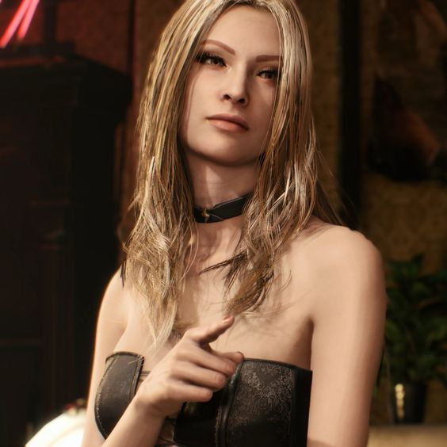
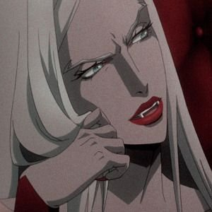
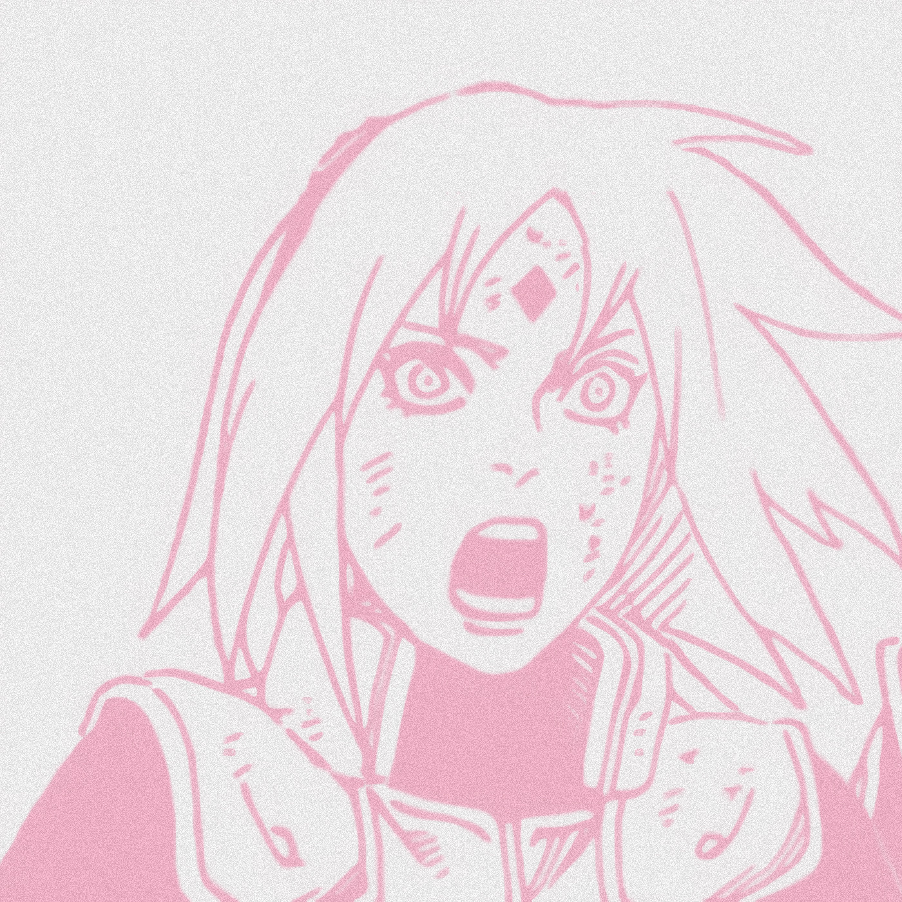

|

~ ❀O Castelo Animado (Howl's Moving Castle) foi lançado em 2004 pelo estúdio Studio Ghibli (um grande estúdio de animações) e foi escrito por Diana Wynne Jones. A história conta a vida de uma garota chamada Sophie, a irmã mais velha de uma família de chapeleiros e, após a morte de seu pai, passou a trabalhar mais na produção dos chapéus, cuidando de sua produção enquanto sua mãe cuida dos outros assuntos como: propagandas, parcerias, etc (mais parece que ela está deixando todo o trabalho para a filha e dando no pé). Sendo uma garota de baixa autoestima, insegura e acomodada a se manter na vida atual mesmo que não esteja feliz, um dia, quando está indo visitar sua irmã Lettie, ela acaba se encontrando com um misterioso rapaz que a leva aos céus — literalmente, contudo, pouco ela sabia que tal coincidência acabaria por desencadear uma aventura sem volta. Após um encontro tão mágico, Sophie acaba recebendo uma misteriosa visita enquanto fechava a chapelaria. Uma senhora havia entrado pela porta e parecia que procurava um chapéu, mas, depois de Sophie insistir que estavam fechando, a senhora, sorrindo, apenas insinua que Sophie tinha se encontrado com Howl — um mago conhecido por seduzir garotas e comer-lhes o coração — e decide mandá-la como um recado para o mago. Confusa, a nossa pobre protagonista acaba sendo amaldiçoada! E agora? Sua única resposta é fugir e achar alguém para quebrar sua maldição.

~ SosnoskiMonster é uma série de mangá japonesa escrita e ilustrada por Naoki Urasawa. Foi publicada pela Shogakukan na revista Big Comic Original entre 1994 e 2001, com os capítulos sendo compilados em 18 volumes. A trama gira em torno de Kenzo Tenma, um cirurgião japonês que vive na Alemanha cuja vida é abalada após se ver no caminho de Johan Liebert, um de seus ex-pacientes, que se revela um serial-killer psicótico. A história inicia-se com uma citação do livro bíblico do Apocalipse, mais propriamente os versículos 1 a 4 do Capítulo 13: i, então, levantar-se do mar uma Fera que tinha dez chifres e sete cabeças; sobre os chifres, dez diademas; e nas suas cabeças, nomes blasfematórios. A Fera que eu vi era semelhante a uma pantera: os pés como os de urso e as faces como as de leão. Deu-lhe o Dragão o seu poder, o seu trono e a sua autoridade. Uma das suas cabeças estava como que ferida de morte, mas essa ferida de morte fora curada. E todos, pasmados de admiração, seguiram a Fera e prostaram-se diante do Dragão, porque dera o seu prestígio à Fera, e prostaram-se igualmente diante da Fera, dizendo: “Quem é semelhante Fera e quem poderá lutar com ela?” A passagem bíblica refere-se à chegada do Anticristo, comparável na série ao principal vilão, Johan. O seu significado torna-se mais claro ao longo da série.

~ GraziCastlevania é um anime baseado no jogo japonês de 1989, Castlevania III: Dracula's Curse, da Konami. Sendo exibida em 32 episódios por 4 temporadas, o anime foi lançado dia 7 de julho de 2017 até o atual momento, sendo dirigido Sam Deats. Sua história narra que, quando sua esposa é queimada na fogueira depois de ser acusada de bruxaria pelo bispo da cidade, o vampiro conde Vlad Dracula Tepes declara que todo o povo da Valáquia pagará com suas vidas. Ele convoca um exército de monstros e demônios que invade o condado, fazendo com que as pessoas vivam vidas de medo e desconfiança. Para combater isso, o desonrado caçador de monstros Trevor Belmont pega em armas contra as forças de Dracula, auxiliado pela maga Sypha Belnades e pelo filho Dampiro de Dracula, Alucard. A descoberta do inferno imposto está bem longe de ser vista e, sendo um bispo, não rezaria para Deus tentar consertar o que irá acontecer. |